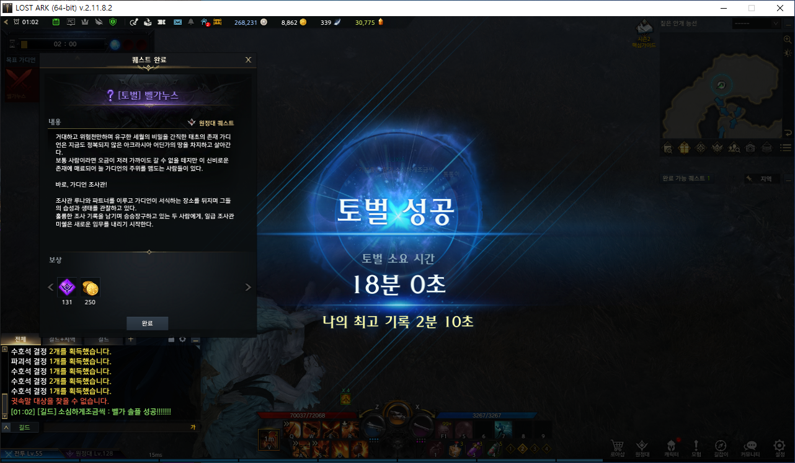

이 부분은 그냥 html로 쓰여 있다는 내용
WEB-html
이 위와 아래는 본문, 설정의 차이
html 의 모든 설정은 body, head사이에 놓이게 됨. head는 설정임
html이 가장 최고 태그
br과 동일함.
ul 로 어디서 부터 어디까지가 목차인지 표현
ul,ol ul은 그냥 목차 덩이/ ol은 숫자 나열
- egoing
- k8805
- youbin
HTML
HELLO
git은 파일 추적, github는 파일 추적 업로드 하는 것.
git은 version control system 이고, 이거를 업로드 하는 공간
repository 라는 것은 그냥 깃허브의 폴더 역할 하나의 주제를 이루는 큰 폴더 느낌
우측 상단에 history를 보면 됨.
commit 은 저장하는 순간임. 히스토리를 보면 코드의 변경 점을 쉽게 파악 가능함.
github desktop 다운로드 하기
github desktop 사용법
폴더 선택을 해서 github desktop이 어떤 폴더를 택할지 알게 해줌 거기에 파일을 만듦 저장을 함 github desktop에서 체크 하고 커밋 푸쉬
웹사이트의 구성요소
웹사이트는 사실 text로 이루어짐.
어떤 텍스트가 필요한지, 어떤 텍스트를 어디에 배치할 지만 알면 모든 웹사이트를 만들 수 있음.
hyper text
hyper text new tab

이 속성은 아무 위치나 상관 없음 width, src 순서 바꾸기 가능
태그만으로 부족할때 속성으로 추가 정보 부여
 LostArk stone symulator
LostArk stone symulator
asdfasdf
12341234
asdf1234